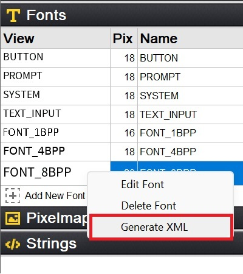
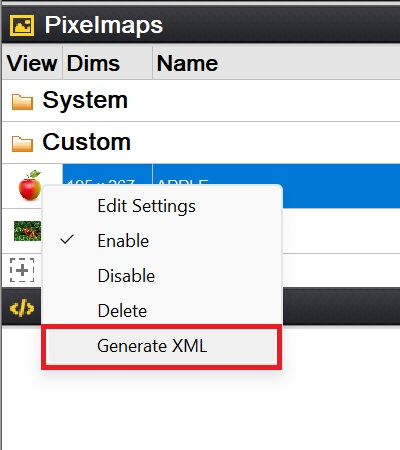
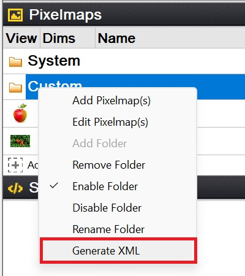

Chapter 11: Resource Project File
A resource project is an XML file that records the properties of one or more font/pixelmap resources. This XML file serves as a means to transfer resource data over the Internet. Additionally, the resource XML file can be converted to a standalone binary file through the GUIX Studio command line. After loading the standalone binary file into the RAM, you can utilize the GUIX APIs gx_binres_font_load and gx_binres_pixelmap_load to load the specific resource from the RAM buffer, making the desired resources available for use within your application.
Resource Project File Format
The resource project contains three main elements: header, display_info and resource, as show below:
<?xml version="1.0" encoding="utf-8"?>
<!DOCTYPE GUIX_Studio_Resource>
<resource_project>
<!-- header element -->
<header>
<!-- header properties and configurations -->
</header>
<!-- display_info element -->
<display_info>
<!-- display information and settings -->
</display_info>
<!-- resource element -->
<resource>
<!-- font or pixelmap resource definitions -->
</resource>
</resource_project>Element: header
The header element records the essential information about the resource. It includes various properties that help manage and ensure compatibility during the conversion and the utilization of the converted resource in the GUIX System. The following code shows an example snippet of the header element.
<header>
<name>pixelmap</name>
<version>56</version>
<converter>GUIX Studio</converter>
<studio_version>603000</studio_version>
<guix_version>60300</guix_version>
<target_cpu>Generic</target_cpu>
<target_tools>Generic</target_tools>
<dave2d_graph_accelerator>FALSE</dave2d_graph_accelerator>
</header>Tags
-
name: The name of the XML file.
-
version: The version of the XML file, utilized by GUIX Studio to manage different XML file versions. The table Below shows available versions and their corresponding minimum required GUIX Studio version. This ensures compatibility and proper parsing of the XML file content.
XML Version Minimum GUIX Studio Version 56
6030000
-
converter: The tool used for converting this XML file to a binary file. GUIX Studio is the default tool for this purpose.
-
studio_version: The minimum required GUIX Studio should be used for the conversion.
-
guix_version: The version of the GUIX library used in the projects where this resource to be utilized. GUIX Studio uses this information to generate resource data compatible with the specified GUIX library version.
-
target_cpu: The target MCU being used. This tag is optional and can be removed if the target MCU is generic. The available values for this tag are as follows:
Target CPU Description Generic
Generic MCUs
Renesas Synergy
Renesas Synergy Platform MCUs
Renesas RA
Renesas RA based MCUs
Renesas RX
Renesas RX based MCUs
Renesas RZ
Renesas RZ based MCUs
ST ChromeArt
MCUs with ST ChromeArt Accelerator enabled
-
target_tools: The compiler being used for the target. This tag is optional and can be removed if the target compiler is generic. The available values for this tag are as follows:
Target Tool Description Generic
Generic Compiler
IAR
IAR compiler
GNU
GNU compiler
CCRX
CCRX compiler
-
dave2d_graph_accelerator: Indicates whether the Dave2D graph accelerator is being used. The tag is necessary when a Renesas based MCU is used and Dave2D accelerator is also employed.
Element: display_info
The display_info element contains important information about the display where the resource is intended to be presented. It ensures that the resource is appropriately generated and compatible with the intended display. The following code shows an example snippet of display_info element:
<display_info>
<display_color_format>GX_COLOR_FORMAT_8BIT_PALETTE</display_color_format>
<rotation_angle>0</rotation_angle>
<total_size>256</total_size>
<palette>
<rgb>4278190080</rgb>
<rgb>4279308561</rgb>
<rgb>4280427042</rgb>
...
</palette>
</display_info>Tags
-
display_color_format: The format of the display color. The available values for this tag are as follows:
Color Format Description GX_COLOR_FORMAT_MONOCHROME
0 = black, 1 = white
GX_COLOR_FORMAT_4BIT_GRAY
4 bit-per-pixel grayscale
GX_COLOR_FORMAT_8BIT_PALETTE
256 color palette mode
GX_COLOR_FORMAT_8BIT_PACKED_PIXEL
3:3:2 color mode
GX_COLOR_FORMAT_1555XRGB
15 bpp, r:g:b order
GX_COLOR_FORMAT_4444ARGB
16 bpp, 4:4:4:4 argb order
GX_COLOR_FORMAT_565RGB
16 bpp, r:g:b order
GX_COLOR_FORMAT_565BGR
16 bpp, b:g:r order
GX_COLOR_FORMAT_24XRGB
24 bpp, r:g:b order, unpacked
GX_COLOR_FORMAT_32ARGB
32 bpp, a:r:g:b order
GX_COLOR_FORMAT_8BIT_ALPHAMAP
8-bit alpha only
-
rotation_type: The type of screen rotation. This tag is optional and is only required when screen rotation is applied. When the screen is rotated, and the GUIX rotated driver is employed, this value is used by GUIX Studio to generate the rotated resource. The available values for this tag are as follows:
Rotation Type Description None
No rotation
CW
Clockwise rotation by 90 degrees
CCW
Counter-clockwise rotation by 90 degrees
FLIP
Flip the screen
-
palette: The palette table being used to generate an 8-bit palette format pixelmap. This tag is optional and is only required when the display color format is set to
GX_COLOR_FORMAT_8BIT_PALETTE.
Element: resource
The following code shows an example snippet of the common elements for the resource element:
<resource>
<type>PIXELMAP</type>
<name>ALPHA_565RGB</name>
<pathinfo>
<pathname>..\common_resources\graphics\black_pause.png</pathname>
<pathtype>project_relative</pathtype>
</pathinfo>
</resource>Tags
-
type: The type of the resource, which can be either
PIXELMAPorFONT. -
name: The name of the resource.
-
pathname: The pathname of the resource.
-
pathtype: The pathtype of the resource. The available values for this tag are as follows:
Path Type Description project_relative
Project relative path
studio_relative
Studio relative path
absolute
Absolute path
Pixelmap resource
The following code shows an example snippet of pixelmap resource element.
<resource>
<type>PIXELMAP</type>
<name>ALPHA_565RGB</name>
<pathinfo>
<pathname>..\common_resources\graphics\black_pause.png</pathname>
<pathtype>project_relative</pathtype>
</pathinfo>
<compress>FALSE</compress>
<alpha>TRUE</alpha>
<dither>FALSE</dither>
<raw>FALSE</raw>
<color_format>GX_COLOR_FORMAT_565RGB</color_format>
<palette_type>None</palette_type>
<resource>Tags
-
compress: Specifies whether to apply compression. Set to TRUE if compression is desired; otherwise, set to FALSE.
-
alpha: Specify whether to generate alpha channel. Set to TRUE if an alpha channel is required; otherwise, set to FALSE.
-
dither: Specify whether to apply dither to the pixelmap. Set to TRUE if dithering is desired; otherwise, set to FALSE.
-
raw: Specify whether to use the image’s original format. Set to TRUE if the original format should be retained; otherwise, set to FALSE.
-
color_format: The output color format of the pixelmap. This tag is optional and can be removed if the output color format matches the display color format. Refer to the description about display color formats in the display_info tag for the supported color formats.
-
palette_type: The palette type used by the pixelmap. This tag is valid when the output color format is
GX_COLOR_FORMAT_8BIT_PALETTE. The available values for this tag are as follows:Palette Type Description None
No palette is used.
Shared
Shared palette is used. For this type, a palette table would be generated based on all the pixelmap resources inside this XML file, and be shared by all the pixelmaps.
Private
Private palette is used. The palette table is generated based on the current pixelmap and is used exclusively by this pixelmap.
Font resource
The following code shows an example snippet of font resource element.
<resource>
<type>FONT</type>
<name>FONT_8BPP</name>
<pathinfo>
<pathname>..\..\fonts\verasans\Vera.ttf</pathname>
<pathtype>project_relative</pathtype>
</pathinfo>
<compress>FALSE</compress>
<height>20</height>
<font_bits>8</font_bits>
<font_kerning>FALSE</font_kerning>
<font_page_data>
<first_char>32</first_char>
<last_char>126</last_char>
</font_page_data>
</resource>Tags
-
compress: Specifies whether to apply compression. Set to TRUE if compression is desired; otherwise, set to FALSE. This option is valid when Renesas-based MCU is used.
-
height: Specify the height of the font.
-
font_bits: Specify the color depth for fonts, which can be 1, 4 and 8.
-
font_kerning: Specify whether to generate a kerning table for the font. The kerning table is used to adjust spacing between individual letters or characters. Make sure the font contains a kerning table if kerning table is required.
-
font_page_data: Define a font page. You may define several font pages if the character range you want isn’t successive.
-
first_char: The first character of the font page.
-
last_char: The last character of the font page.
Create Resource XML File
There are two methods available for creating XML files:
Using GUIX Studio Project: To create an XML file through GUIX Studio, follow these steps:
-
Begin by creating a GUIX Studio project.
-
Add the required resources to the resource view and edit their properties as needed.
-
Select a resource, right-click on it, and choose
Generate XMLmenu item to generate an XML file for the selected resource.Figure 11.1,andFigure 11.2show examples of generating XML file for font or pixelmap resources, respectively.
Figure 11.1 Example of Generating XML File for a Font.


Figure 11.2 Example of Generating XML File for a Pixelmap or a Pixelmap Polder.
Manual Method: Alternatively, you can manually create a resource XML file following the formats outlined earlier.
Convert an XML File into Standalone Binary File
Below is an example of how to generate a binary resource file from a resource project using GUIX Studio’s command line.
guix_studio.exe -x xml_file_pathname -bIn this command, the -x option is used to specify the input resource XML file. The -b option indicates to produce a binary resource file rather than a C file. Executing the provided command generates an independent binary file based on the provided resource XML file.
For a more comprehensive understanding of the GUIX Studio command line, please refer to Chapter 9: GUIX Studio Command Line.